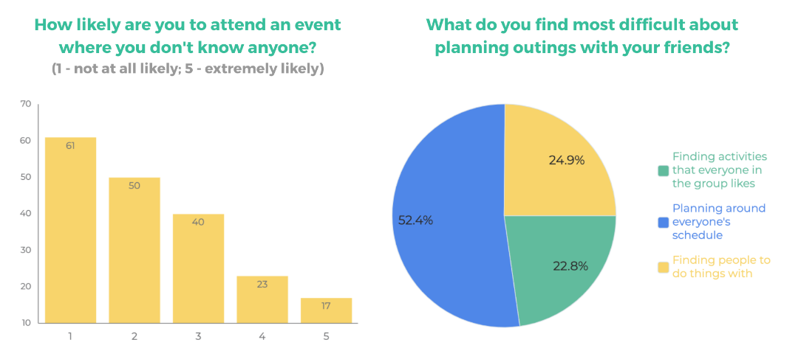

Most people prefer to attend events with others they know, yet planning outing based on friends’ attendance can become frustrating when interests or schedules don’t line up correctly.
DoSiDo is a mobile app that allows users to quickly find local events that their friends are attending and connect with attendees.
Our original research goal was to discover how individuals typically plan and outing and if they attend events alone with intentions to meet new people. These results would give us insight on whether a tool that assists in connecting people prior to the event would be useful.
While people seemed comfortable with meeting others online through a trustworthy source, the interview results suggested that plans are typically made with friends. Meeting new people typically happened at the event. With these new findings in mind, we wanted to dig a little deeper…
After analyzing the interview results, we conducted a online survey distributed via social media. The survey gathered over 190 responses.
DoSiDo gives user the opportunity to:
Applications and services always yield room for expansion and improvement. In future iterations of DoSiDo design, our team would like to: